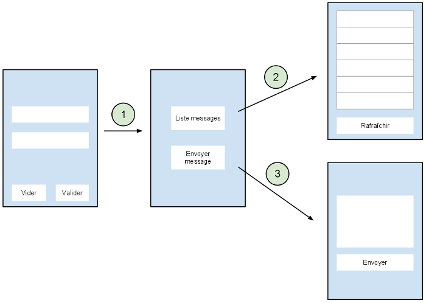

Présentation
Le projet de développement est dans la continuité de l'application formulaire qui a été développée durant la formation. L'application de ce projet devra s'articuler de la manière suivante :

Explications
- Au lancement de l'application, la page de login s'affiche.
- 1 L'utilisateur entre la bonne combinaison user/password et accède à la page d'accueil de l'application où se trouve 2 boutons. Un bouton Liste Messages et un bouton Envoyer message.
- 2 En cliquant sur le bouton Liste messages, l'utilisateur est redirigé vers une page composée de la liste des messages qui ont été envoyés par tous les utilisateurs sur le serveur et d'un bouton Rafraîchir qui permet de recharger la liste des messages. En appuyant sur le bouton retour du mobile (ou simulateur), l'utilisateur revient sur la page d'accueil.
- 3 En cliquant sur le bouton Envoyer message, l'utilisateur accède à une page composée d'un champ de texte et d'un bouton Envoyer. En appuyant sur le bouton retour du mobile (ou simulateur), l'utilisateur revient sur la page d'accueil.
Concrètement, vous allez devoir implémenter les choses suivantes:
- 3 nouvelles activités (page d'accueil, liste messages et envoyer message) et les 3 layouts associés.
- 2 nouvelles AsyncTask qui vont respectivement aller chercher la liste des messages sur le serveur et envoyer un message sur le serveur.
- Créer des boutons et leurs associer des actions (lancement d'une autre Activity, lancement d'une autre AsyncTask...)
- etc...
Remarque La partie tricky du projet est l'implémentation de la liste des messages. Je ne vous ai pas parlé du composant permettant l'affichage d'une liste. C'est cette partie qui va représenter le gros du travail. Vous trouverez des indications à la fin de ce document.
Indications
Urls
Le web service est hébergé sur Heroku à l'adresse http://parlezvous.herokuapp.com. Il n'est pas nécessaire d'indiquer le port comme pendant de la formation.
Voici la liste des urls que vous allez devoir utiliser :
- /message/{user}/{password}/{message}
- Poster un message dont l'auteur est user. La combinaison user/password doit être valide pour que le message soit posté. Aucune valeur de retour n'est renvoyé par le serveur.
- /messages/{user}/{password}
- Recevoir la liste de tous messages qui sont sur le serveur. Les messages sont envoyés dans l'ordre chronologique. La liste que vous recevrez sera une chaînes de caractères respectant le format suivant :
auteur1:message1;auteur2:message2; … auteurN:messageN Vous devrez splitter la chaîne de caractères pour en tirer les informations. Utilisez les méthodes fournit par la classe String.
Pour chacune des requêtes, si la combinaison user/password est erronée, la requête n'aboutira pas et vous recevrez le message: access denied
ListView
- La ListView est le composant permettant d'afficher une liste d'éléments
- Une ListView nécessite un Adapter. C'est l'Adapter qui fait le lien entre les données brutes et les éléments affichés.
- Vous avez la possibilité d'utiliser les Adapters par défaut ou créer votre propre Adapter. Cette dernière solution vous permettra de créer une liste d'élément plus complexe et personnalisée.
Je ne vous donne pas plus d'indications à ce sujet. N'hésitez pas à vous rendre sur http://developer.android.com/index.html.
Voici quelques ressources bien utiles :